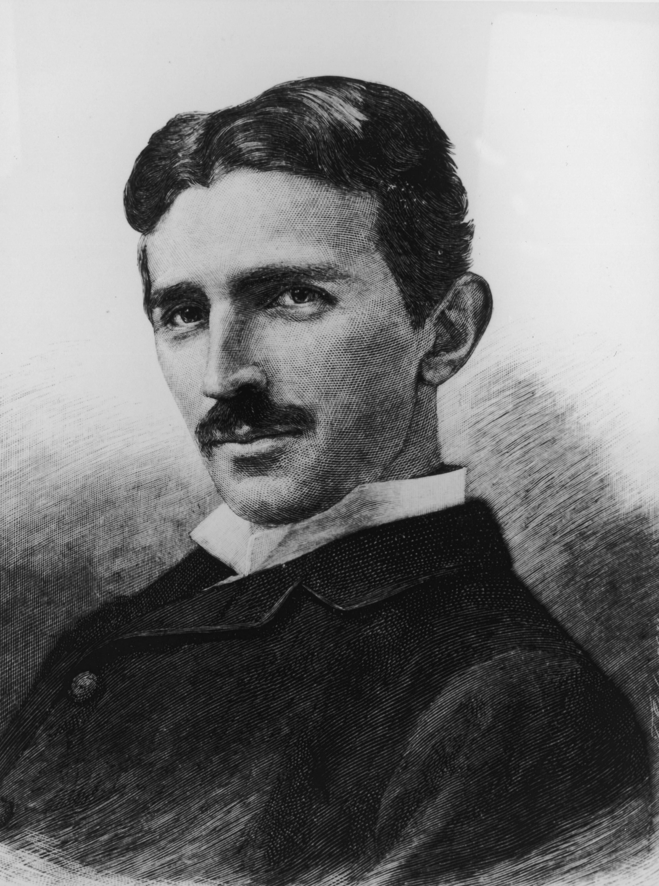

Nikola Tesla
The man who changed the world for better

Nikola Tesla, (born July 9/10, 1856, Smiljan, Austrian Empire [now in Croatia]—died January 7, 1943, New
York, New York, U.S.), Serbian American inventor and engineer who discovered and patented
Tesla was from a family of Serbian origin. His father was an Orthodox priest; his mother was unschooled but
highly intelligent. As he matured, he displayed remarkable imagination and creativity as well as a poetic touch.
Training for an engineering career, he attended the Technical University at Graz, Austria, and the University of
Prague. At Graz he first saw the Gramme dynamo, which operated as a generator and, when reversed, became an
electric motor, and he conceived a way to use alternating current to advantage. Later, at Budapest, he
visualized the principle of the rotating magnetic field and developed plans for an induction motor that would
become his first step toward the successful utilization of alternating current. In 1882 Tesla went to work in
Paris for the Continental Edison Company, and, while on assignment to Strassburg in 1883, he constructed, after
work hours, his first induction motor. Tesla sailed for America in 1884, arriving in New York with four cents in
his pocket, a few of his own poems, and calculations for a flying machine. He first found employment with Thomas
Edison, but the two inventors were far apart in background and methods, and their separation was inevitable.
Unknown Facts about Tesla
Tesla was born on July 10, 1856, in the Austrian Empire, now Croatia. He was the fourth of five children.
After a checkered academic career in Europe, he worked as a telegraph drafter and electrician before moving
to the United States to work for Thomas Edison in 1884
If you couldn’t imagine life without your TV remote, thank Nikola Tesla for making it possible. Tesla
invented, predicted or contributed to development of hundreds of technologies that play big parts in our
daily lives -- like the remote control, neon and fluorescent lights, wireless transmission, computers,
smartphones, laser beams, x-rays, robotics and, of course, alternating current, the basis of our present-day
electrical system.
Innovation runs in Tesla’s blood. Tesla once wrote: “My mother was an inventor of the first order and would,
I believe, have achieved great things had she not been so remote from modern life and its multi fold
opportunities. She invented and constructed all kinds of tools and devices and wove the finest designs from
thread which was spun by her.” He credited both his parents’ influence for his success.
Tesla lived in New York City for 60 years, and remnants of his time there still remain. The corner of 40th
Street and 6th Avenue in downtown Manhattan has been designated “Nikola Tesla Corner” -- with its own street
sign -- because of its proximity to Tesla’s laboratory at 8 West 40th Street, where he worked in 1900 while
building his now-infamous Tesla Tower on Long Island. At nearby Bryant Park Place, a plaque commemorates the
Engineer’s Club, which awarded Tesla the Edison Medal on May 18, 1917. During his later years, Tesla fed
pigeons in nearby Bryant Park.
Tesla received his U.S. citizenship in 1891, the same year he invented the Tesla coil. Tesla coils are a
type of electrical circuit used to generate low-current, high-voltage electricity. Today, they’re widely
used in radios, televisions and other electronics, and can be used for wireless transmission. A coil at
Tesla’s experimental station in Colorado Springs, Colorado, created 30-foot sparks that could be seen from
10 miles away.
During the war of the currents, alternating current (AC) -- favored by Tesla -- battled for wide acceptance
with direct current (DC), favored by Edison. At stake was the basis for the entire nation’s electrical
system. Edison launched a campaign against AC, claiming it was dangerous and could kill people; Tesla
countered by publicly subjecting himself to 250,000-volt shocks to demonstrate AC’s safety. Ultimately,
alternating current won the fight.
Tesla designed the first hydroelectric power plant in Niagara Falls, New York, harnessing the power of the
waterfalls he had marveled at since childhood. Construction took three years and power first flowed to homes
in nearby Buffalo on Nov. 16, 1896. A statue of Tesla on Goat Island overlooks the falls today.
“Teslas,” a unit used to measure the strength of magnetic fields, are named after Tesla. Another namesake is
Tesla Motors, the electric car start-up, in homage to Tesla’s role in the invention of the electric motor.
In 1901, Tesla received financial backing from J. Pierpont Morgan to build his Wardenclyffe laboratory in
Shoreham, Long Island. The facility included the “Tesla Tower,” a 185-foot high structure with a 65-foot
copper dome transmitter on the top. Tesla’s vision was to use the tower to transmit signals and free,
unlimited wireless electricity all over the world. Thanks to Tesla's early work, wireless transfer of energy
is finally being realized today -- from wireless chargers for electric toothbrushes and smartphones, to
wireless electric vehicle charging, a technology being researched at the Energy Department’s National Labs.
Tesla was not a savvy businessman and suffered financially, despite his achievements. He lost financial
backing from Morgan, who felt he couldn’t profit from Tesla’s wireless electricity concept, and sold his
assets to make up for dual foreclosures on Wardenclyffe. The property was later sold to a film processing
company. In 1917, the U.S. government demolished Tesla’s partially completed tower because it worried German
spies would use it to intercept communications during World War I.
His long-abandoned Long Island laboratory will soon become a museum. Earlier this year, a non-profit
organization raised enough money to purchase the long-abandoned Wardenclyffe. The group plans to restore the
building and turn it into a Tesla museum and science education center
Read more about Tesla